Effect-Driven Skill Abstractions
for Offline Reinforcement Learning
NeurIPS 2026 Main Track Poster - Sydney, Australia
- 1 Department of Computer Engineering, Bogazici University, Türkiye
- 2 Department of Computer Science, University of Innsbruck, Austria
- 3 Department of Computer Engineering, Middle East Technical University, Türkiye
- 4 Digital Science Center, University of Innsbruck, Austria
Learn skills by what they achieve, then compose them to reach a goal.
Abstract
We seek to learn discrete skill abstractions to facilitate long-horizon, goal-conditioned reinforcement-learning (RL) tasks. Recent approaches have shown success by quantizing actions via clustering or reconstruction. However, these objectives lead to skills that are not directly related to what the current state affords or what the goal requires. Instead, we argue that goal-directed skills should be driven by how they affect the state of the agent. To realize this, we introduce a novel quantization method for action chunks that optimizes next-state predictions conditioned on the current state and action. This objective encourages skills to be distinguished by the future states they lead to, resulting in a vocabulary that spans diverse outcomes reachable from a given state. Our framework can easily be paired with common offline RL methods by replacing their continuous actor head with a discrete one that selects among the learned skills. We can execute these skills in the environment by converting them back to continuous actions using a trained low-level controller. Experiments on benchmark navigation and manipulation tasks largely show substantial and consistent improvements over both the continuous-actor baselines and reconstruction-based discretizations.
From action chunks to effect-driven skills
For goal-conditioned control, the useful distinction between two action chunks is the outcome they produce. We learn a finite vocabulary of temporal skills by predicting their effects, then separate high-level skill selection from low-level continuous control.
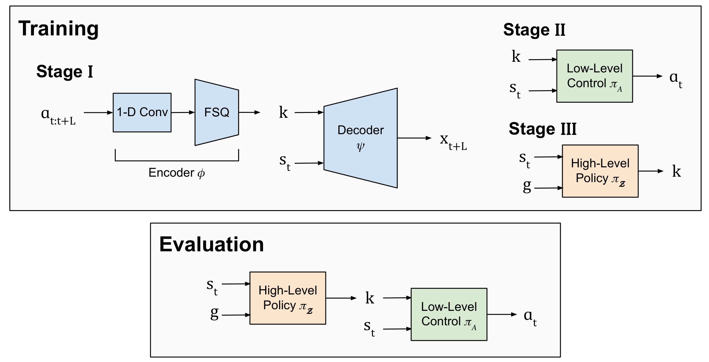
- Learn codes. An action-chunk encoder uses Finite Scalar Quantization (FSQ) to produce discrete codes. A decoder combines a code with the current state to predict future task-relevant state features, or a future image for pixel-based tasks.
- Learn execution. A low-level controller maps the selected code and current state to continuous actions. The effect decoder is used to learn the vocabulary, rather than during policy execution.
- Learn selection. A high-level policy selects a code from the current state and goal. Discrete variants of GCBC, GCIQL, GCIVL, and QRL share the same vocabulary and low-level controller.
Predicted effects become executable skills
From each starting state, skill codes describe different possible outcomes. We compare the Stage I decoder’s predictions with the trajectories produced by the Stage II controller.
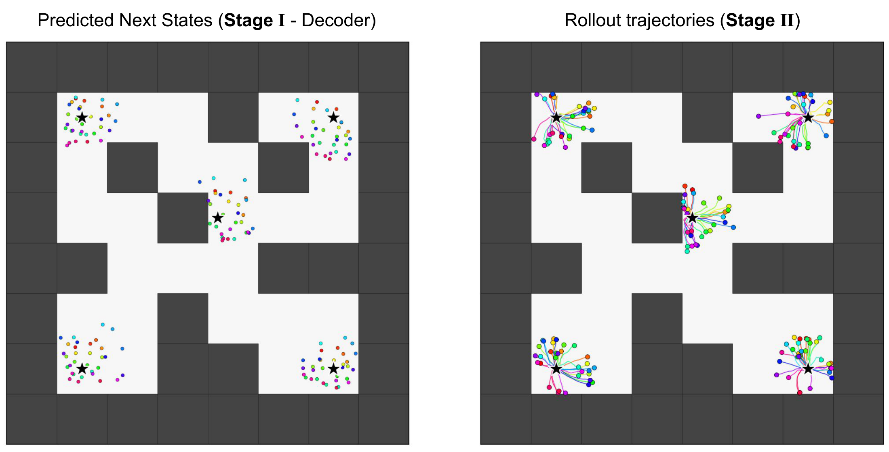
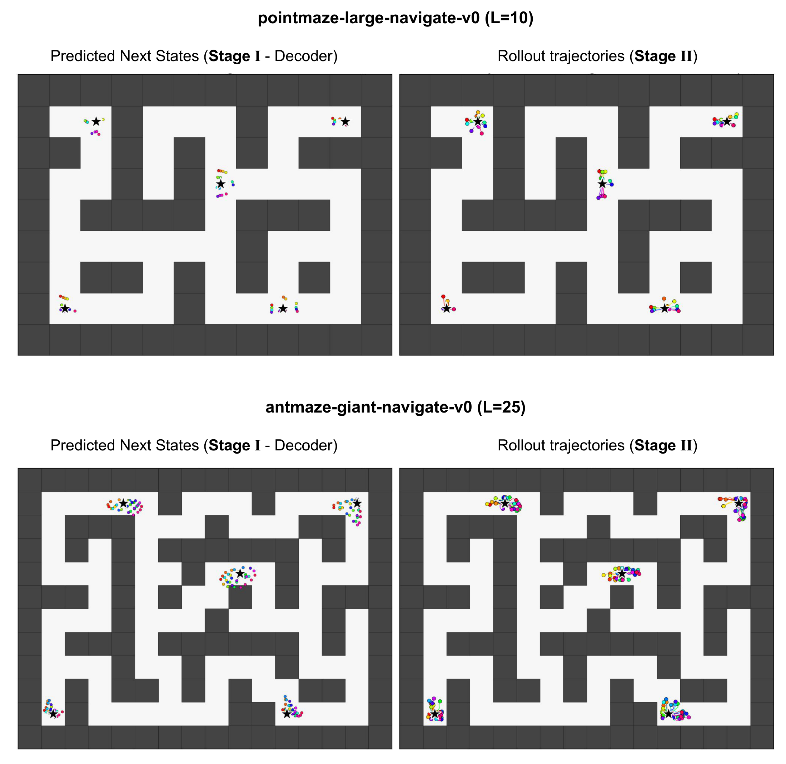
Predicted visual effects
In the Visual Scene example from our slides, different codes predict opening the drawer, approaching the cube, or pressing either button. These descriptions interpret the predicted outcomes; they are not manually supplied skill labels.

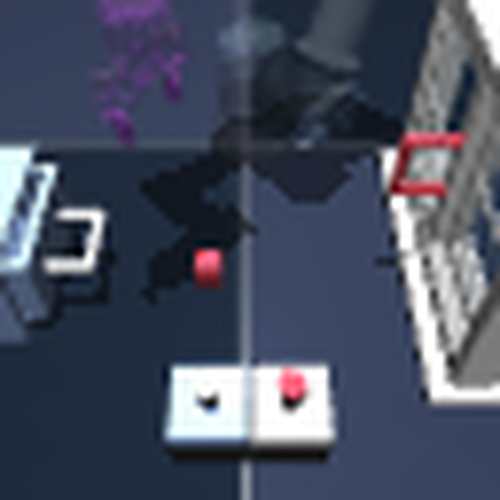

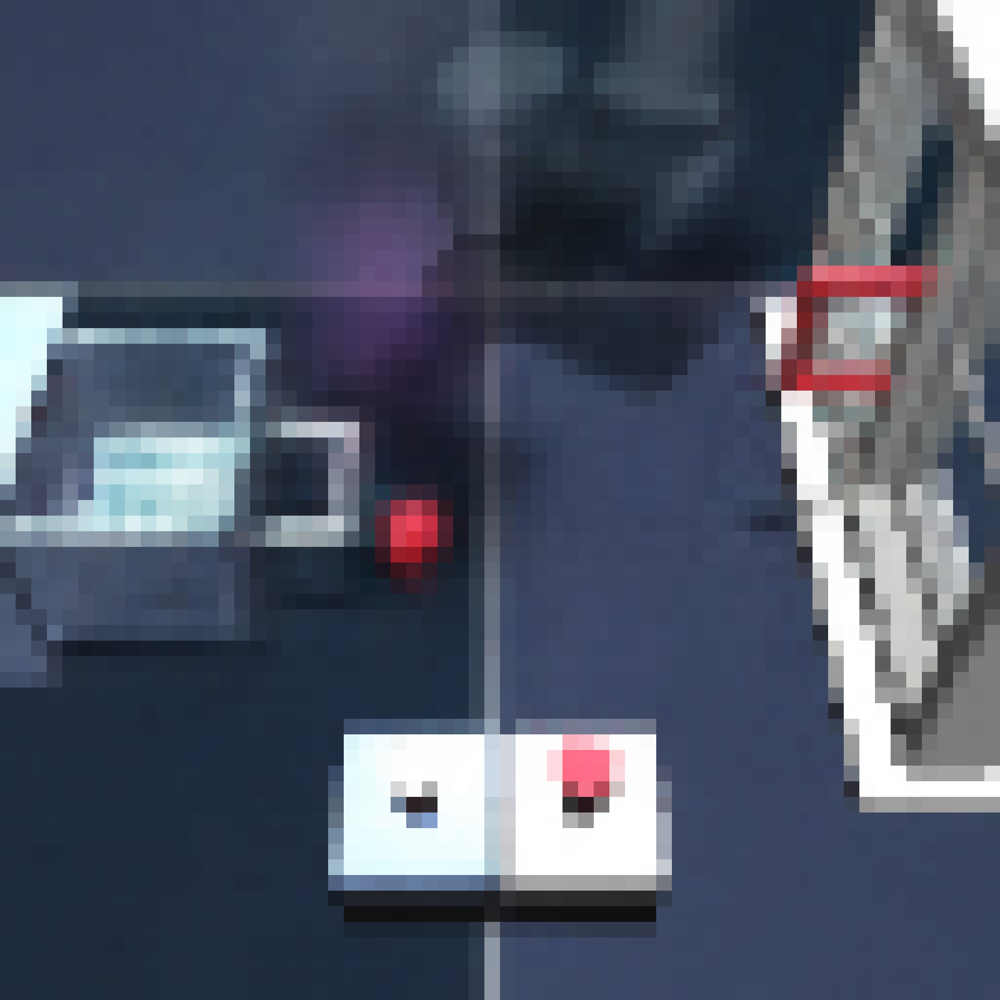

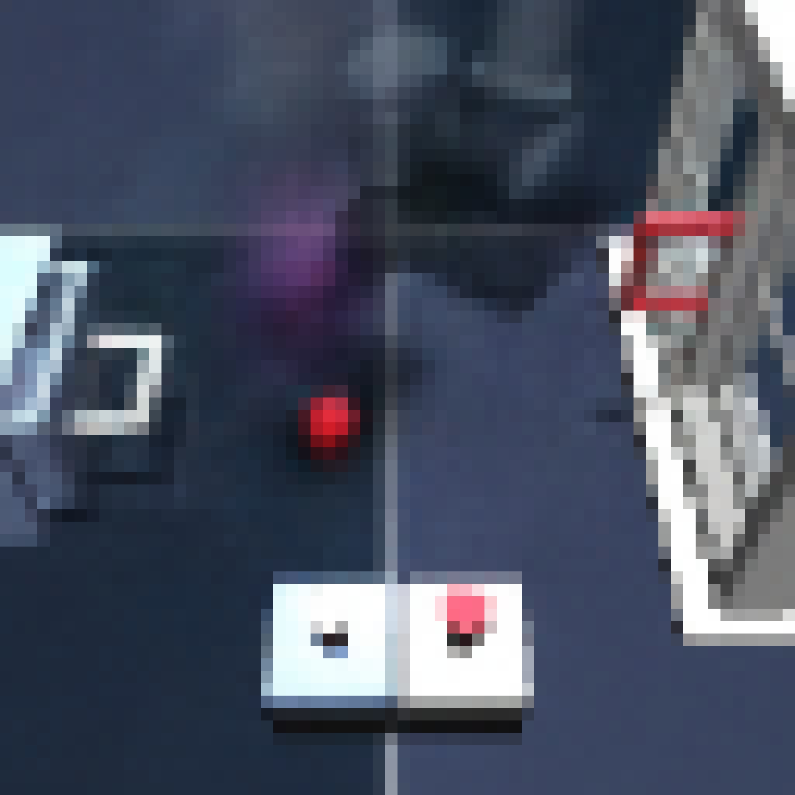

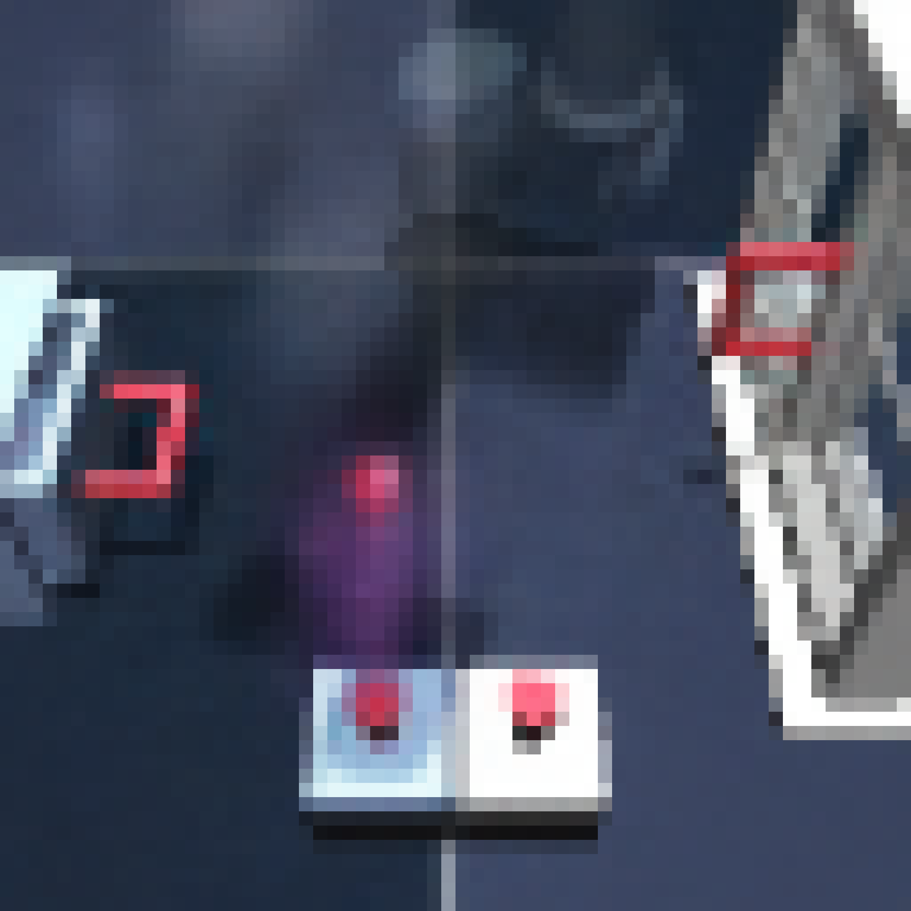

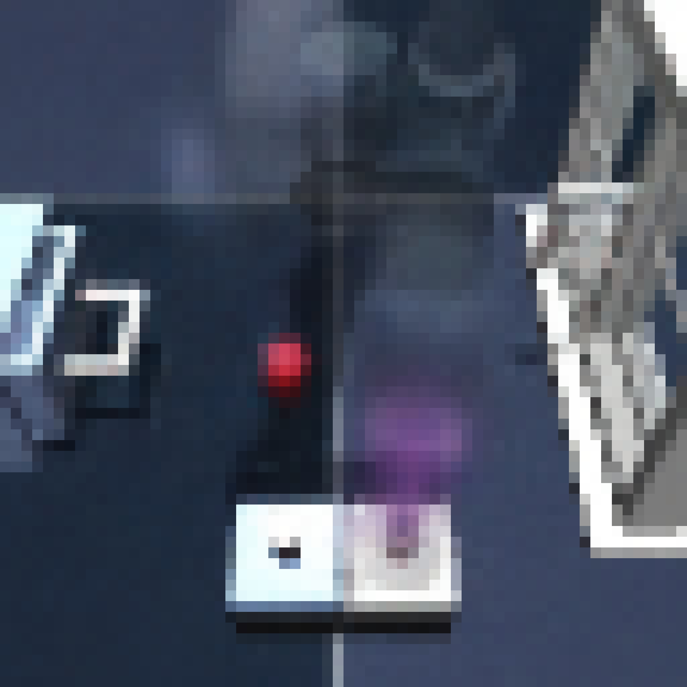
What does the vocabulary capture?
The quantization objective determines what the codes distinguish. We compare effect-driven skills with action reconstruction (RBQ), full-state prediction (FSP), and single-step action quantization (SSAQ).
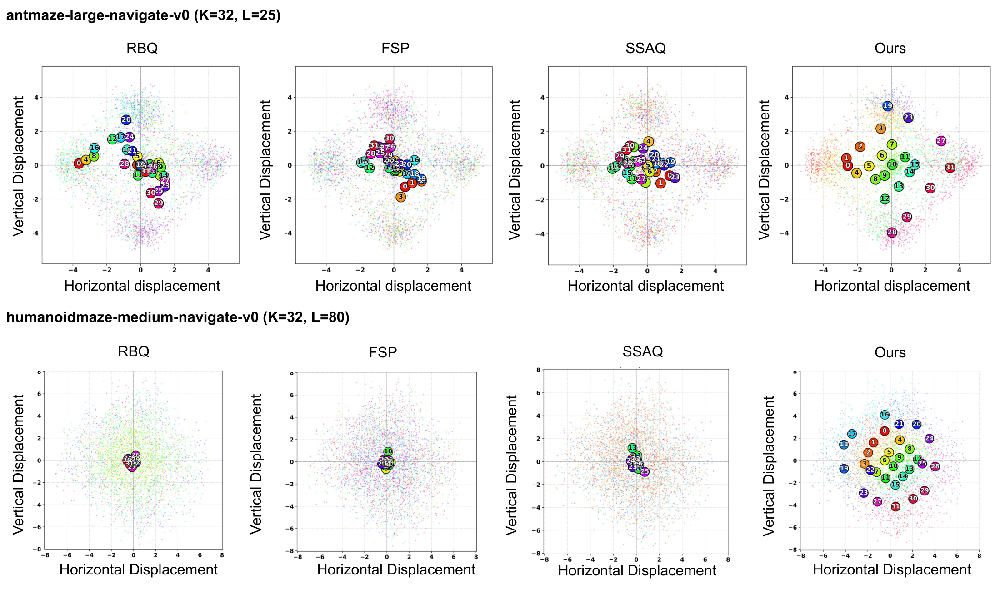
Navigation and manipulation
We evaluate on state-based and pixel-based tasks from OGBench, D4RL Kitchen, and Push-T. The tasks cover maze navigation, button configurations, object manipulation, and contact-rich pushing.
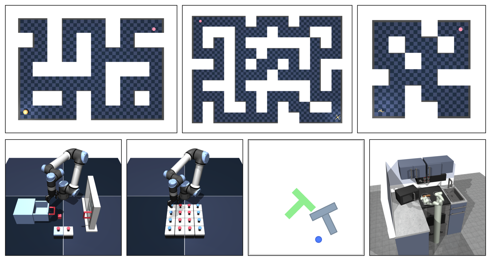
Replacing the continuous actor with a discrete skill policy improves performance on the majority of evaluated tasks across the four methods. The largest mazes remain challenging; the paper reports the complete results and ablations.
Navigation and puzzle policy rollouts
Trained-policy executions with pixel observations.
Trained-policy executions toward target button-color configurations.
Push-T policy rollouts
The policy selects discrete skills for contact-rich manipulation. Below are the two D-GCBC examples shown in our slides.
Environment illustrations
These clips illustrate the datasets and environments used in evaluation.
Environment illustration from the presentation.
Example dataset trajectory from OGBench.
Environment illustration associated with Diffusion Policy.
Composing skills over long horizons
Each color along a successful trajectory identifies the skill being executed. A high-level policy composes these temporal actions to reach a distant goal.
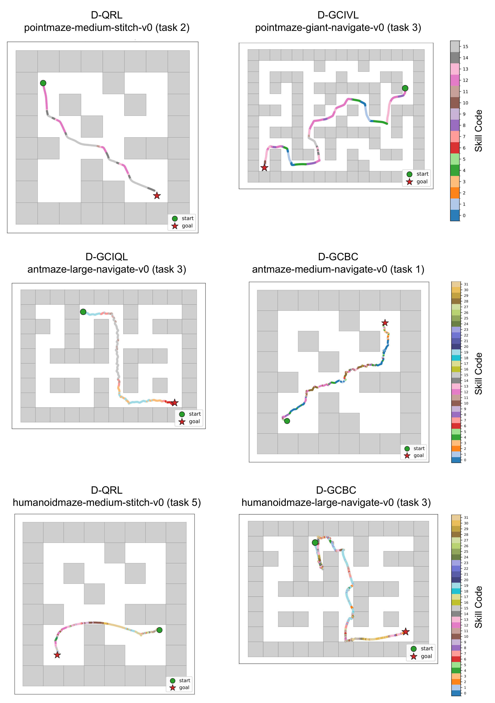
Citation
@inproceedings{kilic2026effect,
title = {Effect-Driven Skill Abstractions for Offline Reinforcement Learning},
author = {Kilic, Burcu and Drexel, David and Ugur, Emre and Piater, Justus},
booktitle = {Fortieth Annual Conference on Neural Information Processing Systems},
year = {2026},
url = {https://openreview.net/forum?id=vLeZitFeKS}
}Acknowledgments
This work was supported by the Scientific and Technological Research Council of Turkey (TUBITAK) ARDEB 1001 Program (124E227) and by the INVERSE Project under Grant 101136067, funded by the European Union.